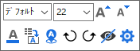

FAQ-134 横棒や縦棒グラフにデータ値を表示するにはどうしたら良いでしょうか?
Show-Data-Values-on-Bar
最終更新日：2020/2/17
ミニツールバーを使う方法
- プロット上でクリックして、ミニツールバーのデータラベルを表示ボタン
 をクリックします。
をクリックします。
- ラベル上でクリックすると、ラメル用のミニツールバーが表示され、ラベル形式を変更できます。

作図の詳細ダイアログを使う方法
- グラフ内の横棒または縦棒をダブルクリックし、作図の詳細（プロット属性）を開きます。
- ラベルタブを開き、有効にするにチェックを付けます。
- ラベル形式ドロップダウンリストから選択します。
キーワード: ラベル、y値